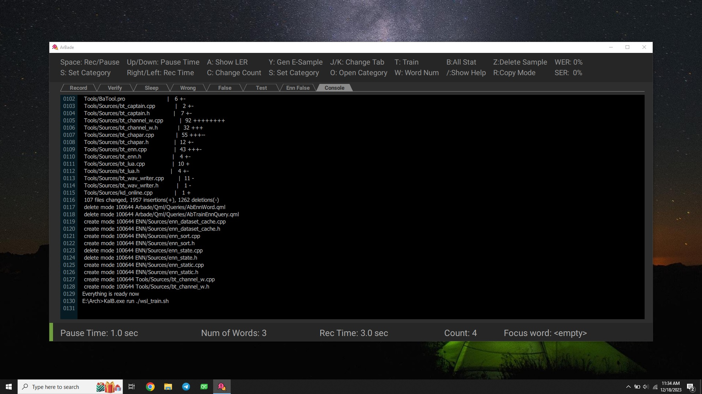
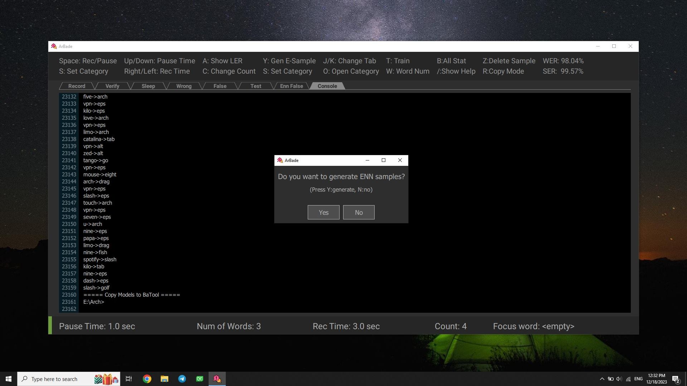
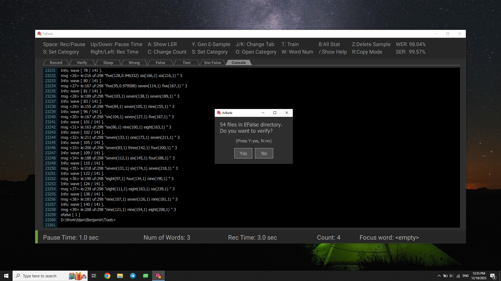

Now if you have enough samples, you can train your model by Pressing T.

At any time outside of terminal, by pressing P or clicking on Console tab, you can access the results of running train scripts in terminal. All the train procedure is automatic and you should only wait for the dialog indicating train is finished and now it's ENN samples generation turn.

And verifying engine false generated samples.

Detailed description about train steps and procedure can be found in User Guide
Verification
When you are using Benjamin regularly, samples will be generated when issueing commands or recorded when in sleep mode saying ordinary words. To use these samples, you need to assure that they are matched with the detected words. For verifying these samples you can switch to Verify tab and press space to start verification process. While verifying sleep mode samples, make sure that all words are detected wrong. Verifying

If the sample is wrong press Z to delete sample, while playing or at Decide Pause status after voice stopped. By default after playing each sample in unverified category, if there wasn't any key press, the sample will be verified. you can change this behaviour by pressing R.
Detailed description about verification parameters and procedure can be found in User Guide
Congrats! Now you know the very initial steps to train your model!